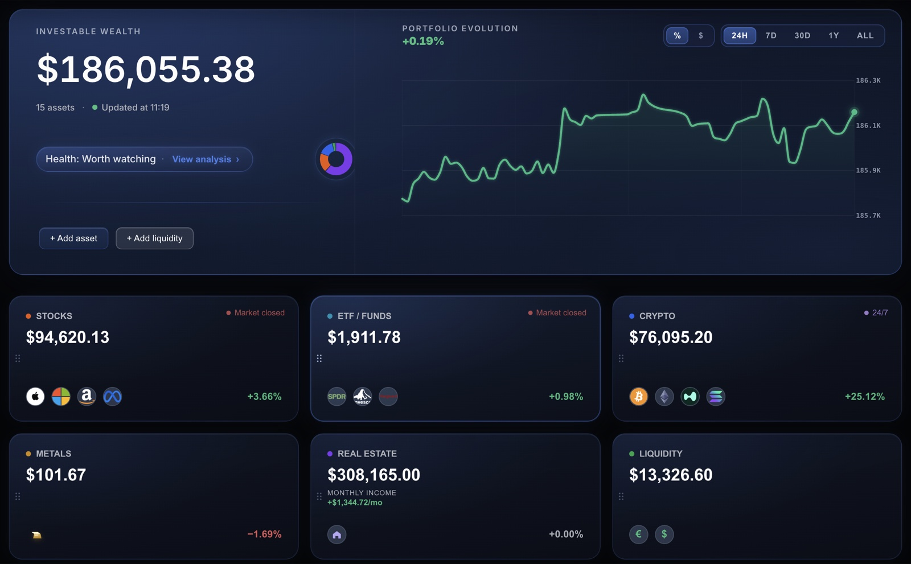
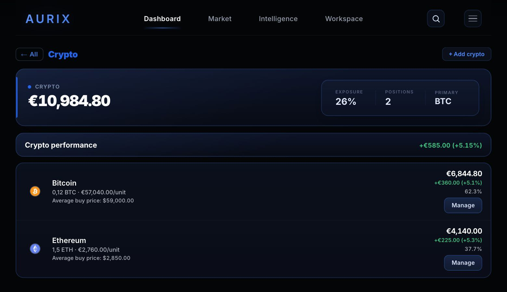
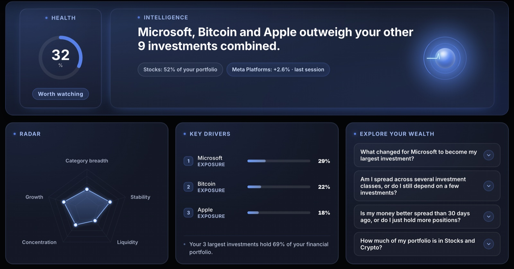

Free
€0 no cost
Includes:
- All your positions, with no asset limit
- Dashboard with total, split and evolution
- Market: follow indices and assets
- A first Intelligence reading of your portfolio
Bring your investments together, understand what is changing and plan your next steps. Stocks, ETFs, funds, crypto and more, in one place.

Your investments are spread out. Your view doesn’t have to be.
You record your positions yourself: Aurix does not connect to your bank or ask for your banking credentials.
See how much you have, how it is distributed and how it evolves. Organise stocks, ETFs, funds, crypto, metals, real estate and cash in a single view. Follow the markets and assets that interest you in Market.


Intelligence puts your wealth in context: where it is concentrated, what has changed and how its structure evolves. A reading of your data to better understand your portfolio.

Plan with your own numbers: organise your budget, set goals and see how a loan or compound interest would affect them.
For example: Monthly budget, Financial goals, Loan simulator and Compound interest.

€0 no cost
Includes:
€7.99 per month
Or €69.99 a year, billed annually: €5.83 a month, you save 27%.
Everything in Free, plus:
Renewing subscription. Cancel from Manage my plan.
Record all your positions, see your wealth, its split and evolution, follow the market and get a first Intelligence reading. Premium adds full Intelligence, all Workspace tools and templates, and saving your plans.
No. You record your positions by hand and Aurix updates the prices of listed assets. It does not need your banking credentials and cannot move your money.
Monthly (€7.99 a month) or annual (€69.99, in a single yearly charge). The subscription renews automatically at the end of each period until you cancel it from “Manage my plan” in the app. Payments are processed by Stripe; Aurix does not store your card.
No. Aurix organises and explains your wealth; it does not give financial advice or investment recommendations.
In the browser on your computer or phone, and you can add it to your home screen. Your data is kept in your account.
Start with Free. Discover Premium from the app.